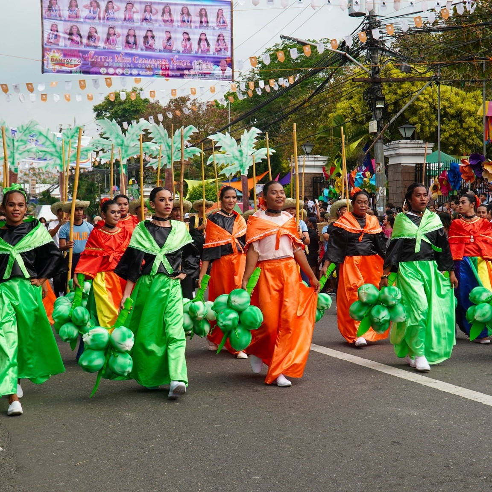
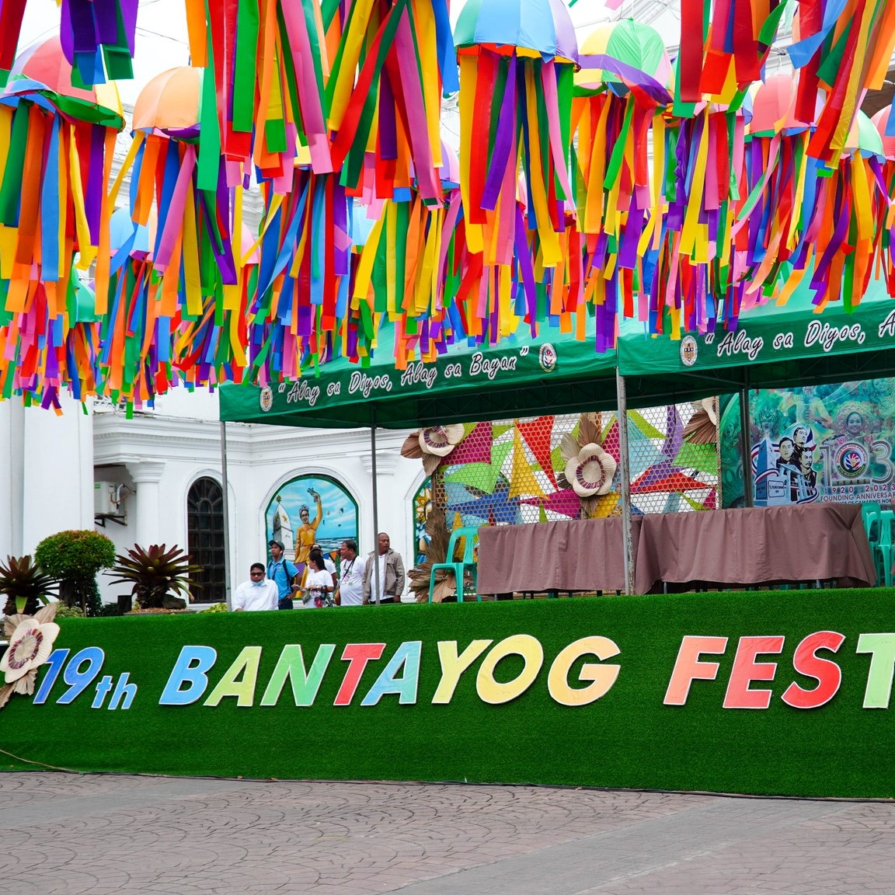
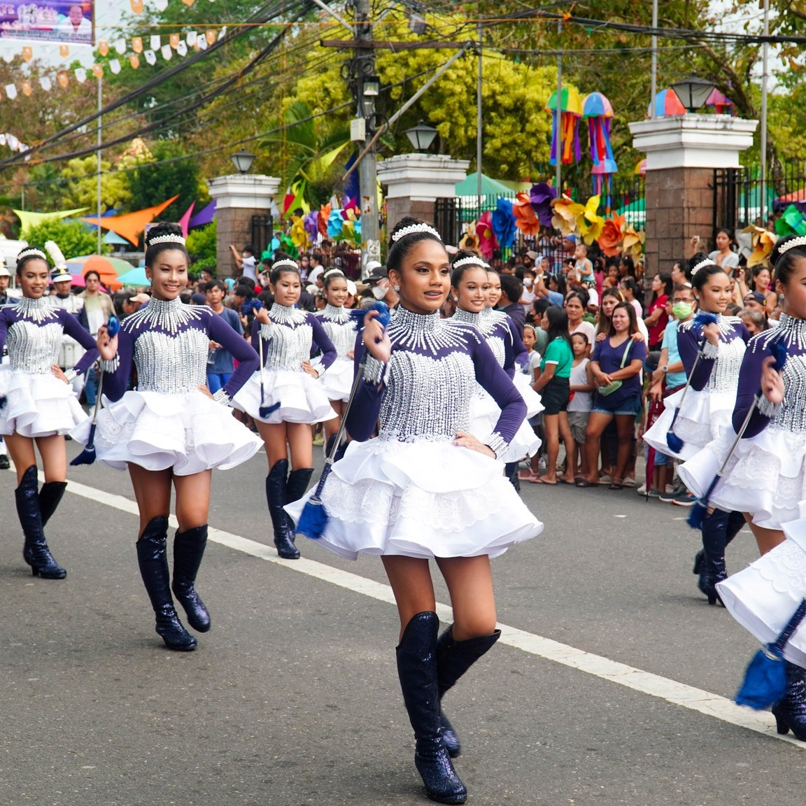
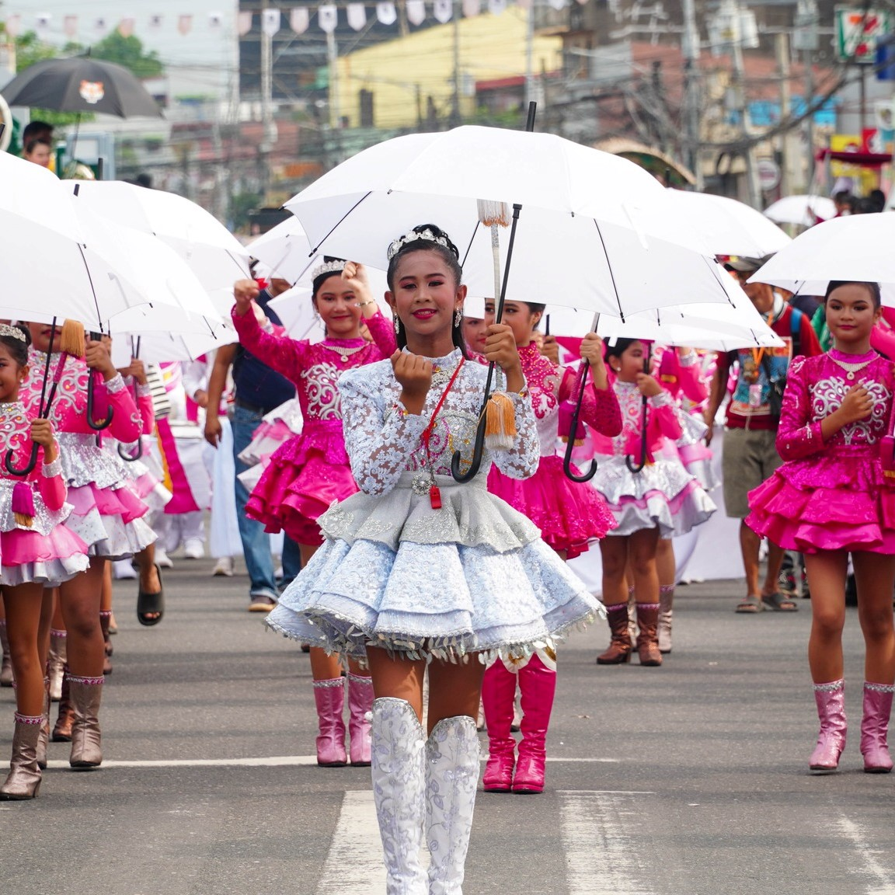

The first Bantayog (monument) of Jose Rizal in Camarines Norte holds a significant place in the province's history. Erected in commemoration of the national hero's visit to the town of Daet on September 16, 1898, the Bantayog stands as a symbol of local admiration and recognition of Rizal's ideals and contributions to the Filipino nation. The monument serves as a reminder of the profound impact Rizal had in inspiring the people of Camarines Norte to strive for independence, freedom, and social reform. It stands as a testament to the enduring legacy of Jose Rizal and his role in shaping the province's historical and cultural identity.




The Bantayog Festival is an annual celebration held in the province of Camarines Norte, Philippines. It is a month-long event typically taking place in the month of May. The Bantayog Festival showcases the unique traditions, customs, and artistic talents of the people of Camarines Norte. It provides an opportunity for locals and visitors alike to celebrate the province's achievements, appreciate its cultural diversity, and promote tourism and local products. The festival's name, "Bantayog," translates to "monument" or "memorial" in English, representing the province's commitment to preserving its history and honoring its heroes.
Welcome to the vibrant world of the Bantayog Festival, where history comes alive and traditions dance with joy! Step into the enchanting province of Camarines Norte as it unveils a kaleidoscope of colors, melodies, and cultural wonders.
Imagine streets adorned with dazzling costumes, as performers gracefully sway to the rhythm of ancient beats. The air is filled with the tantalizing aroma of local delicacies, tempting your taste buds to indulge in gastronomic delights. Every corner echoes with laughter, as locals and visitors alike immerse themselves in the festivities.
Marvel at the grand parade, where floats adorned with intricate floral arrangements glide through the streets like magical carriages. Dancers and musicians transport you to a bygone era, sharing tales of heroes and legends through captivating performances. Feel the energy and passion as their movements tell stories of resilience, love, and triumph.
Wander through the bustling trade fair, a treasure trove of local craftsmanship and culinary delights. From handmade crafts to traditional attire, each booth showcases the rich heritage and artistic prowess of Camarines Norte. Engage with the artisans, hear their stories, and take home a piece of their passion and talent.
As the sun sets, the festivities continue under a starlit sky. Experience the grand fireworks display, illuminating the heavens with bursts of color and shimmering lights. Join in the merriment, dancing to the lively music that fills the air, celebrating the spirit of unity and pride that binds the province together.
The Bantayog Festival is not just a mere event; it is an immersive journey that transports you to the heart and soul of Camarines Norte. It is a celebration of its rich history, vibrant culture, and warm-hearted people. So come, let the Bantayog Festival embrace you in its loving embrace and leave you with memories that will dance in your heart forever.